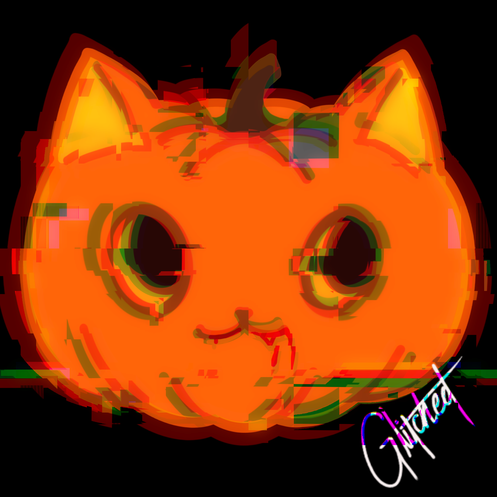
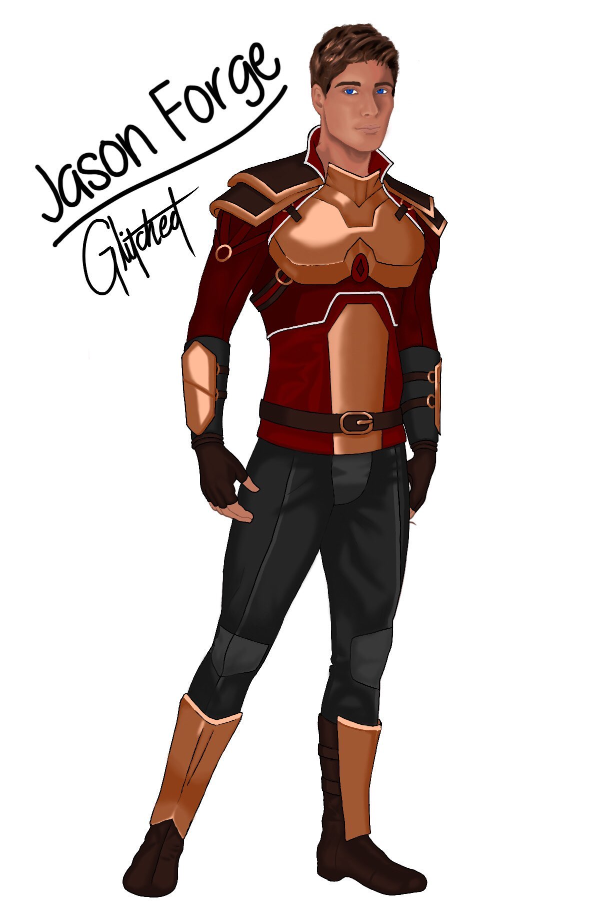
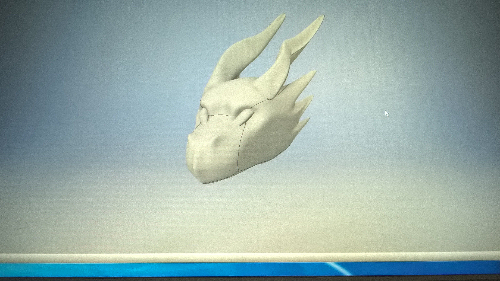

The Modern Medium

Programs that allow for digital art are always growing, giving people the ability to sketch, paint, draw, and create pieces with customizable options in just a few clicks. This style can mimic nearly every traditional art form; the only thing I’ve noticed is that the natural effects of water or alcohol reacting on their own aren’t always abstract or unpredictable enough for me. The forms used in digital art — like pixel art, 3D modeling, animation, and digital painting — are seen everywhere in modern media because they offer flexibility for the artists working with them. I would say digital art is around medium difficulty to learn, as it depends on the style you’re trying to replicate, and there is a learning curve that can sometimes be tedious at first. I do a little bit of digital art myself, mainly trying to replicate semi‑realistic styles, but the multiple layers and constant building up of colors not blending the way I hoped can be a bit of a bummer. I’ve also used Adobe Illustrator for vector art to create many stickers throughout the years. That form is pretty easy if you have a vinyl cutter that allows the stickers to be made from it. One thing I’ve noticed, though, is that most programs for this medium cost money, so it can be an expensive form of art if the software you’re looking at requires monthly or yearly subscriptions.
Video credit: Kuroshiro on YouTube
Tools Used
- Procreate
- Photoshop
- Adobe Illustrator

